-

Attempt
51 -

Marks Obtained
6 / 65 -

Your score
9.23% -

Time Taken
00 H 25 M 16 S -

Result
Failed
| No | Domain | Total Question | Correct | Incorrect | Unattempted | Marked as Review |
|---|---|---|---|---|---|---|
|
|
|
|
|
|
|
|
|
|
|
|
|
|
|
|
|
|
|
|
|
|
|
|
|
|
|
|
|
|
|
|
|
|
|
|
|
|
|
|
|
|
|
|
|
|
|
|
You are working as an AWS Architect for a start-up company. They have a two-tier production website. Database servers are spread across multiple Availability Zones and are stateful.
You have configured Auto Scaling Group for these database servers with a minimum of 2 instances & maximum of 6 instances. During post-peak hours, you observe some data loss. Which feature needs to be configured additionally to avoid future data loss (and copy data before instance termination)?
Correct Answer – B
Explanation: Adding Lifecycle Hooks to Auto Scaling group puts the instance into wait state before termination. During this wait state, you can perform custom activities to retrieve critical operational data from a stateful instance. Default Wait period is 1 hour.
- Option A is incorrect as the cooldown period will not help to copy data from the instance before termination.
- Option C is incorrect as Termination policy is used to specify which instances to terminate first during scale in, configuring termination policy for the Auto Scaling group will not copy data before instance termination.
- Option D is incorrect as Suspending Terminate policy will not prevent data loss but will disrupt other process & prevent scale in.
For more information on lifecycle-hooks, refer to the following URLs:
AWS Auto Scaling will automatically scale resources as needed to align to your selected scaling strategy, This lab walks you through to use Auto Scaling to automatically launch or terminate EC2’s instances based on user defined policies, schedules and health checks.
- Credit Needed10
- Time 0 : 55
You have an application running in us-west-2 that requires 6 EC2 Instances running at all times. With 3 Availability Zones in the region viz. us-west-2a, us-west-2b, and us-west-2c, which of the following deployments provides fault tolerance if an Availability Zone in us-west-2 becomes unavailable? (SELECT TWO)
Answer – D and E
Option D- US West 2a-6 , US West 2b - 6, US West 2c-0
- If US West 2a goes down we will still have 6 instances running in US West 2b
- If US West 2b goes down we will still have 6 instances running in US West 2a
- If US West 2c goes down we will still have 6 instances running in US West 2a, 6 instances running in US West 2b
Option E- US West 2a-3 , US West 2b - 3, US West 2c-3
- If US West 2a goes down we will still have 3 instances running in US West 2b and 3 instances running in US West 2c
- If US West 2b goes down we will still have 3 instances running in US West 2a and 3 instances running in US West 2c
- If US West 2c goes down we will still have 3 instances running in US West 2a and 3 instances running in US West 2b
Option A is incorrect because, even if one AZ becomes unavailable, we will only have 4 instances available. This does not meet the specified requirements.
Option B is incorrect because, in the case of either us-west-2a or us-west-2b becoming unavailable, you would only have 3 instances available. This does not meet the specified requirements.
Option C is incorrect because, if us-west-2a becomes unavailable, you would only have 4 instances available. This also does not meet the specified requirements.
For more information on AWS Regions and Availability Zones, please visit the following URL:
Note:
In this scenario, we need to have 6 instances running all the time even when 1 AZ is down.
Hence options D & E are correct.
An application allows a manufacturing site to upload files. Each uploaded 3 GB file is processed to extract metadata, and this process takes a few seconds per file. The frequency at which the uploading happens is unpredictable. For instance, there may be no upload for hours, followed by several files being uploaded concurrently.
Which architecture will address this workload in the most cost-efficient manner?
Answer – D
You can first create a Lambda function with the code to process the file.
Then, you can use an Event Notification from the S3 bucket to invoke the Lambda function whenever a file is uploaded.
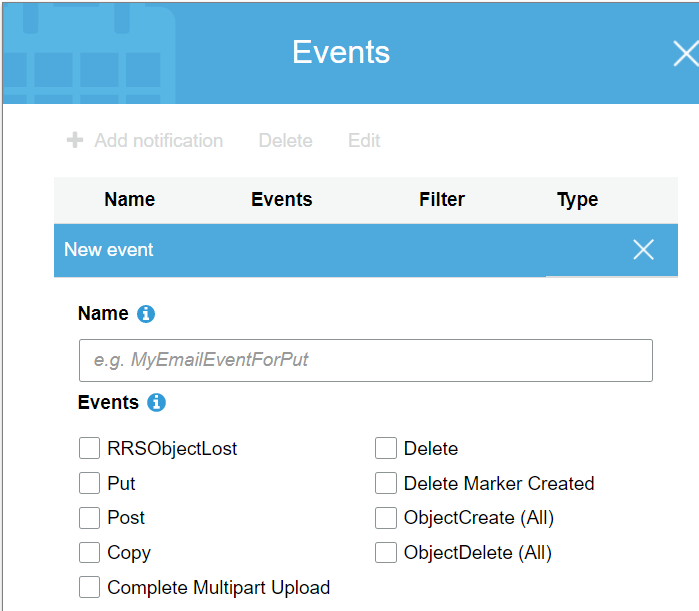
Option A is incorrect as Kinesis is used to collect, process, and analyze real-time data.
Option B is incorrect as the frequency of uploads in the given scenario is quite unpredictable. By default, SQS uses short polling. In this case, it will lead to the cost factor going up since we are getting messages in an unpredictable manner and many times it will be returning empty responses.
For more information on Amazon S3 event notification, please visit the following URL:
This lab walks you through creation and usage of AWS Serverless service called AWS Lambda. In this lab, we will create a sample lambda function which is triggered on S3 Object upload event and makes a copy of that object on another S3 Bucket.
- Credit Needed10
- Time 0 : 30
A company is migrating an on-premises 10TB MySQL database to AWS. There's a business requirement that the replica lag should be kept under 100 milliseconds. In addition to this requirement, the company expects this database to quadruple in size.
Which Amazon RDS engine meets the above requirements?
Answer – D
AWS Documentation clarifies that the above requirements are supported by AWS Aurora.
Amazon Aurora (Aurora) is a fully managed, MySQL and PostgreSQL compatible, relational database engine. It combines the speed and reliability of high-end commercial databases with the simplicity and cost-effectiveness of open-source databases. It delivers up to five times the throughput of MySQL and up to three times the throughput of PostgreSQL without requiring any changes in most of your existing applications.
All Aurora Replicas return the same data for query results with minimal replica lag—usually, much less than 100 milliseconds after the primary instance has written an update.
The company expects the database to quadruple in size and the business requirement is that replica lag must be kept under 100 milliseconds.
Aurora Cluster can grow up to 64 TB in size and replica lag—is less than 100 milliseconds after the primary instance has written an update.
For more information on AWS Aurora, please visit the following URL:
-
This lab walks you through the creation and testing of an Amazon Aurora database. We will create an Aurora MySQL Database and and test the connection.
-
Duration: 01:00:00 Hrs
-
AWS Region: US East (N. Virginia)
- Credit Needed10
- Time 1 : 0
For which of the following scenarios should a Solutions Architect consider using ElasticBeanStalk? (Choose Two)
Answer – A and D
AWS Documentation clearly mentions that the Elastic Beanstalk component can be used to create Web Server environments and Worker environments.
This following diagram illustrates an example of Elastic Beanstalk architecture for a web server environment tier and shows how the components in that type of environment tier work together.
https://docs.aws.amazon.com/elasticbeanstalk/latest/dg/using-features-managing-env-tiers.html
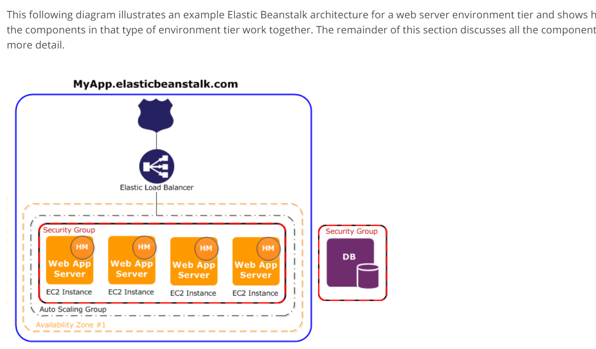
- For more information on AWS Elastic beanstalk Web server environments, please visit the following URLs:https://docs.aws.amazon.com/elasticbeanstalk/latest/dg/concepts-webserver.html
- Option B is incorrect. Elastcibeanstalk is used to deploy and manage the applications on AWS. It's not used to store the data. https://docs.aws.amazon.com/elasticbeanstalk/latest/dg/Welcome.html.
- For more information on AWS Elastic beanstalk Worker environments, please visit the following URL:https://docs.aws.amazon.com/elasticbeanstalk/latest/dg/concepts-worker.html
- Option C is incorrect. Beanstalk does not make sense to use for long-running processes. EC2 instances would be a better fit.
- Option D is correct. We can use Elastic Beanstalk to distribute incoming application traffic across multiple targets, such as Amazon EC2 instances, containers, IP addresses, and Lambda functions. It can handle the varying load of your application traffic in a single Availability Zone or across multiple Availability Zones. https://aws.amazon.com/elasticloadbalancing/
- Option E is incorrect. When you launch an Elastic Beanstalk environment, you first choose an environment tier. The environment tier that you choose determines whether Elastic Beanstalk provisions resources to support an application that handles HTTP requests or an application that pulls tasks from a queue. An application that serves HTTP requests runs in a web server environment. An environment that pulls tasks from an Amazon Simple Queue Service queue runs in a worker environment.
Further, when you create an environment, Elastic Beanstalk provisions the resources required to run your application. AWS resources created for an environment include one elastic load balancer (ELB in the diagram), an Auto Scaling group, and one or more Amazon EC2 instances.
So, these resources are required to run the application 24/7, not for only at night or day.
An application with a 150 GB relational database runs on an EC2 Instance. While the application is used infrequently with small peaks in the morning and evening, which storage type would be the most cost-effective option for the above requirement?
Answer – C
Since the database is used infrequently, not throughout the day, and the question requires the MOST cost-effective storage type, the preferred choice would be EBS General Purpose SSD over EBS provisioned IOPS SSD.
The minimum volume of Throughput Optimized HDD is 500 GB. As per our scenario, we need 150 GB only. Hence, option C: Amazon EBS General Purpose SSD, would be the best choice for a cost-effective storage solution.
- For more information on AWS EBS Volumes, please visit the following URL:
Note:
SSD-backed volumes are optimized for transactional workloads involving frequent read/write operations with small I/O size, where the dominant performance attribute is IOPS. The question is focusing on a relational DB where we will give importance to Input/output operations per second. Hence, EBS General Purpose SSD seems to be a good option in this case. Since the question does not mention any mission-critical low-latency requirement, IOPS is not required.
HDD-backed volumes are optimized for large streaming workloads where throughput (measured in MiB/s) is a better performance measure than IOPS.
-
This lab walks you through the steps to launch and configure a virtual machine in the Amazon cloud.
-
You will practice using Amazon Machine Images to launch Amazon EC2 Instances and use key pairs for SSH authentication to log into your instance. You will create a web page and publish it.
-
Duration: 00:30:00 Hrs
-
AWS Region: US East (N. Virginia)
- Credit Needed10
- Time 0 : 30
You are working as an AWS consultant for a start-up company. They have developed a web application for their employees to share files with external vendors securely. They created an AutoScaling group for the web servers which requires two m4.large EC2 instances running at all times, scaling up to a maximum of twelve instances. Post-deployment of the application, a huge rise in cost was observed. Due to a limited budget, the CTO has requested your advice to optimize the usage of instances in the Auto Scaling groups. What would you suggest to reduce costs without any adverse impact on the performance?
Correct Answer – D
Auto Scaling group supports a mix of On-Demand & Spot instance which help to design a cost-optimized solution without any impact on the performance. You can choose the percentage of On-Demand & Spot instance based on the application requirements. With Option D, Auto Scaling group will have 2 instances initially as the On-Demand instances while remaining instances will be launched in a ratio of 20 % On-Demand instance & 80% Spot Instance.
- Option A is incorrect. With t2. micro, there would be a reduction in cost, but it will impact the performance of the application.
- Option B is incorrect as there would not be any cost reduction with all On-Demand instances.
- Option C is incorrect. Although this will reduce cost, all spot instance in an auto-scaling group may cause inconsistencies in the application & lead to poor performance.
For more information on Auto Scaling with multiple Instance types & purchase options, refer to the following URLs:
AWS Auto Scaling will automatically scale resources as needed to align to your selected scaling strategy, This lab walks you through to use Auto Scaling to automatically launch or terminate EC2’s instances based on user defined policies, schedules and health checks.
- Credit Needed10
- Time 0 : 55
You are working as an AWS Architect for a start-up company. The company has a two-tier production website on AWS with web servers in front end & database servers in the back end. The third-party firm has been looking after the operations of these database servers. They need to access these database servers in private subnets on SSH port. As per standard operating procedure provided by Security team, all access to these servers should be over secure layer & should be logged in. What will be the best solution to meet this requirement?
Correct Answer – D
External users will be unable to access the instance in private subnets directly. To provide such access, we need to deploy Bastion hosts in public subnets. In case of the above requirement, third-party users will initiate a connection to Bastion hosts in public subnets & from there, they will access SSH connection to database servers in private subnets.
- Option A is incorrect as Bastion hosts need to be in Public subnets, & not in Private subnets, as third-party users will be accessing these servers from the internet.
- Option B is incorrect as NAT instance is used to provide internet traffic to hosts in private subnets. Users from the internet will not be able to do SSH connections to hosts in private subnets using NAT instance. NAT instance is always present in Public subnets.
- Option C is incorrect as NAT instance is used to provide internet traffic to hosts in private subnets. Users from the internet will not be able to do SSH connections to hosts in private subnets using NAT instance.
For more information on bastion instance, refer to the following URL:
An AWS Solutions Architect who is designing a solution to store and archive corporate documents has determined Amazon Glacier as the right choice.
An important requirement is that the data must be delivered within 10 minutes of a retrieval request.
Which feature in Amazon Glacier could help to meet this requirement?
Correct Answer – B
AWS Documentation mentions the following:
Expedited retrievals allow you to access data in 1–5 minutes for a flat rate of $0.03 per GB retrieved. Expedited retrievals allow you to quickly access your data when occasional urgent requests for a subset of archives are required.
The Vault Lock and Standard Retrieval are standard with 3-5 hours retrieval time while Bulk retrievals which can be considered the cheapest option have 5-12 hours retrieval time.
For more information on AWS Glacier Retrieval, please visit the following URL:
You are working for a start-up company that develops mobile gaming applications using AWS resources. For creating AWS resources, the project team is using CloudFormation Templates. The Project Team is concerned about the changes made in EC2 instance properties by the Operations Team, apart from parameters specified in CloudFormation Templates. To observe changes in AWS EC2 instance, you advise using CloudFormation Drift Detection. After Drift detection, when you check drift status for all AWS EC2 instance, drift for certain property values having default values for resource properties is not displayed. What would you do to include these resources properties to be captured in CloudFormation Drift Detection?
Correct Answer – B
AWS CloudFormation Drift Detection can be used to detect changes made to AWS resources outside the CloudFormation Templates. AWS CloudFormation Drift Detection only checks property values that are explicitly set by stack templates or by specifying template parameters. It does not determine drift for property values that are set by default. To determine drift for these resources, you can explicitly set property values which can be the same as that of the default value.
- Option A is incorrect. If property values are assigned explicitly to these properties, running AWS CloudFormation Drift Detection would be detected in both individuals as well as the entire CloudFormation Stack.
- Option C is incorrect as AWS EC2 instance is supported by CloudFormation Drift Detection.
- Option D is incorrect. Since for all other resources, CloudFormation Drift Detection has already determined drift, there is no other read permission to be granted further.
For more information on CloudFormation Drift Detection, refer to the following URL:
https://docs.aws.amazon.com/AWSCloudFormation/latest/UserGuide/using-cfn-stack-drift.html
This lab walks you through to AWS CloudFormation features. In this lab, we will demonstrate the use AWS CloudFormation Stack in creating a simple LAMP Server.
- Credit Needed10
- Time 0 : 30
While reviewing the Auto Scaling events for your application, you notice that your application is scaling up and down multiple times in the same hour.
What changes would you suggest in order to optimize costs while preserving elasticity? (SELECT TWO)
Correct Answer – C and E
Here, not enough time is being given for the scaling activity to take effect and for the entire infrastructure to stabilize after the scaling activity. This can be maintained by increasing the Auto Scaling group CoolDown timers.
- For more information on Auto Scaling CoolDown, please visit the following URL:
You will also have to define the right threshold for the CloudWatch alarm for triggering the scale down policy.
- For more information on Auto Scaling Dynamic Scaling, please visit the following URL:
AWS Auto Scaling will automatically scale resources as needed to align to your selected scaling strategy, This lab walks you through to use Auto Scaling to automatically launch or terminate EC2’s instances based on user defined policies, schedules and health checks.
- Credit Needed10
- Time 0 : 55
A company hosts a popular web application that connects to an Amazon RDS MySQL DB instance running in a default VPC private subnet created with default ACL settings. The web servers must be accessible only to customers on an SSL connection and the database must only be accessible to web servers in a public subnet. Which solution would meet these requirements without impacting other applications? (SELECT TWO)
Correct Answer – B and C
This sort of setup is explained in the AWS documentation.
1) To ensure that traffic can flow into your web server from anywhere on secure traffic, you need to allow inbound security at 443.
2) And then, you need to ensure that traffic can flow from the database server to the web server via the database security group.
The below snapshots from the AWS Documentation show rule tables for security groups that relate to the same requirements as in the question.
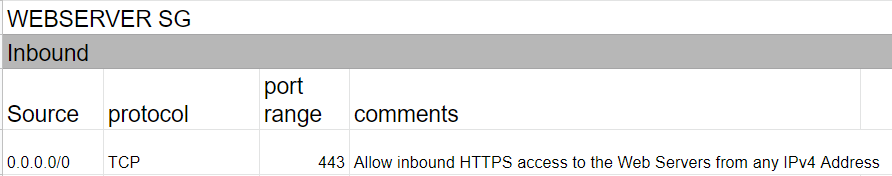

- For more information on this use case scenario, please visit the following URL:
- Options A and D are invalid answers.
- Network ACLs are stateless. So we need to set rules for both inbound and outbound traffic for Network ACLs.
- Option E is also invalid because, in order to communicate with the MySQL servers, we need to allow traffic to flow through port 3306.
- Note: The above correct options are the combination of steps required to secure your web and database servers. In addition, the company may implement additional security measures from their end
-
Learn how to build Public and Private subnets from scratch.
-
VPC wizard will not be used. So every component required to build public and private subnets will be created and configured manually.
-
This will give an in-depth understanding of internal components of VPC and subnets.
- Credit Needed10
- Time 0 : 30
An application reads and writes objects to an S3 bucket. When the application is fully deployed, the read/write traffic is expected to be 5,000 requests per second for the addition of data and 7,000 requests per second for the retrieval of data.
What would the architect do to maximize the Amazon S3 performance?
Answer – C
NOTE: Based on the S3 new performance announcement, "S3 request rate performance increase removes any previous guidance to randomize object prefixes to achieve faster performance." But Amazon exam questions and answers have not yet been updated. So, Option C is the correct answer as per AWS exam.
This recommendation for increasing performance in case of a high request rate in S3 is given in the documentation.
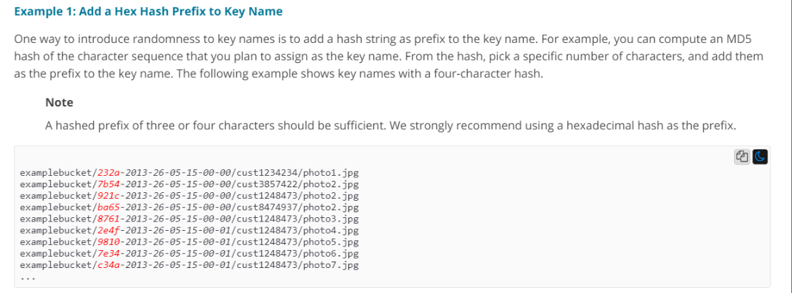
To know more about Amazon S3 performance, visit the following URLs:
- https://aws.amazon.com/blogs/aws/amazon-s3-performance-tips-tricks-seattle-hiring-event/
- https://docs.aws.amazon.com/AmazonS3/latest/dev/request-rate-perf-considerations.html
You are deploying an application on Amazon EC2 that must call AWS APIs. Which method would you use to securely pass the credentials to the application?
Correct Answer - D
AWS Documentation mentions the following:
You can use roles to delegate access to users, applications, or services that don't normally have access to your AWS resources. It is not a good practice to use IAM credentials for a production-based application. However, it is a good practice to use IAM Roles.
For more information on IAM Roles, please visit the following URL:
https://docs.aws.amazon.com/IAM/latest/UserGuide/id_roles.html
A website runs on EC2 Instances behind an Application Load Balancer. The instances run in an Auto Scaling Group across multiple Availability Zones and deliver several static files that are stored on a shared Amazon EFS file system. The company needs to avoid serving the files from EC2 Instances every time a user requests these digital assets.
What should the company do to improve the user experience of the website?
Answer - B
AWS Documentation mentions the following about the benefits of using CloudFront:
Amazon CloudFront is a web service that speeds up distribution of your static and dynamic web content, such as .html, .css, .js, and image files to your users. CloudFront delivers your content through a worldwide network of data centers called edge locations. When a user requests content that you're serving with CloudFront, the user is routed to the edge location that provides the lowest latency (time delay), so that the content is delivered with the best possible performance. If the content is already in the edge location with the lowest latency, CloudFront delivers it immediately.
For more information on AWS CloudFront, please visit the following URL on page 3 under the section "Accelerate Static Website Content Delivery" :
The glacier is not used for frequent retrievals. So Option A is not a good solution. Options C & D will also not help in this situation.
A Solutions Architect is designing a highly scalable system to track records. These records must remain available for immediate download for up to three months and then must be deleted. What is the most appropriate decision for this use case?
Correct Answer – B
- Option A is incorrect since the records need to be stored in a highly scalable system.
- Option C is incorrect since the records must be available for immediate download.
- Option D is incorrect since EFS lifecycle management is used to migrate files that have not been accessed for a certain period of time to the Infrequent Access storage class. Files moved to this storage remain indefinitely, and not get deleted. And due to this reason, this option is not correct.
AWS Documentation mentions the following about Lifecycle Policies:
Lifecycle configuration enables you to specify the Lifecycle Management of objects in a bucket. The configuration is a set of one or more rules, where each rule defines an action for Amazon S3 to apply to a group of objects. These actions can be classified as follows:
Transition actions – In which you define when the transition of the object occurs to another storage class. For example, you may choose to transition objects to the STANDARD_IA (IA, for infrequent access) storage class 30 days after creation or archive objects to the GLACIER storage class one year after creation.
Expiration actions – In which you specify when the objects will expire. Then Amazon S3 deletes the expired objects on your behalf.
For more information on AWS S3 Lifecycle Policies, please visit the following URL:
To know further about EFS Lifecycle Management.
https://docs.aws.amazon.com/efs/latest/ug//lifecycle-management-efs.html
This lab walks you through to Amazon Simple Storage Service. Amazon S3 has a simple web services interface that you can use to store and retrieve any amount of data, at any time, from anywhere on the web. In this lab we will demonstrate AWS S3 by creating a sample S3 bucket, uploading an object to S3 bucket and setting up bucket permission and policy.
- Credit Needed10
- Time 0 : 30
A consulting firm repeatedly builds large architectures for their customers using AWS resources from several AWS services including IAM, Amazon EC2, Amazon RDS, DynamoDB and Amazon VPC. The consultants have architecture diagrams for each of their architectures, and are frustrated that they cannot use them to automatically create their resources.
Which service should provide immediate benefits to the organization?
Answer - B
AWS CloudFormation: This supplements the requirement in the question and enables consultants to use their architecture diagrams to construct CloudFormation templates.
AWS Documentation mentions the following on AWS CloudFormation:
AWS CloudFormation is a service that helps you model and set up your Amazon Web Service resources so that you can spend less time managing those resources and more time focusing on your applications that run in AWS. You create a template that describes all the AWS resources that you want (like Amazon EC2 instances or Amazon RDS DB instances), and AWS CloudFormation takes care of provisioning and configuring those resources for you.
For more information on AWS Cloudformation, please visit the following URL:
https://docs.aws.amazon.com/AWSCloudFormation/latest/UserGuide/Welcome.html
AWS Elastic Beanstalk is an easy-to-use service for deploying and scaling web applications and services developed with Java, .NET, PHP, Node.js etc. You can simply upload your code and Elastic Beanstalk automatically handles the deployment, from capacity provisioning, load balancing, auto-scaling to application health monitoring.
In question mentioned that "A consulting firm repeatedly builds large architectures for their customers using AWS resources from several AWS services including IAM, Amazon EC2, Amazon RDS, DynamoDB and Amazon VPC."
When you are building large architectures repeatedly, you can use the cloud formation template so that create or modify an existing AWS CloudFormation template. A template describes all of your resources and their properties. When you use that template to create an AWS CloudFormation stack, AWS CloudFormation provisions the Auto Scaling group, load balancer, and database for you. After the stack has been successfully created, your AWS resources are up and running. You can delete the stack just as easily, which deletes all the resources in the stack. By using AWS CloudFormation, you easily manage a collection of resources as a single unit. whenever working with more number of AWS resources together, cloud formation is the best option.
This lab walks you through to AWS CloudFormation features. In this lab, we will demonstrate the use AWS CloudFormation Stack in creating a simple LAMP Server.
- Credit Needed10
- Time 0 : 30
The security policy of an organization requires an application to encrypt data before writing to the disk. Which solution should the organization use to meet this requirement?
Correct Answer – A
Option B is incorrect. The AWS Certificate Manager can be used to generate SSL certificates to encrypt traffic in transit, but not at rest.
Option C is incorrect. It is used for issuing tokens while using the API gateway for traffic in transit.
Option D is used for providing secure access to EC2 Instances.
AWS Documentation mentions the following on AWS KMS:
AWS Key Management Service (AWS KMS) is a managed service that makes it easy for you to create and control the encryption keys used to encrypt your data. AWS KMS is integrated with other AWS services including Amazon Elastic Block Store (Amazon EBS), Amazon Simple Storage Service (Amazon S3), Amazon Redshift, Amazon Elastic Transcoder, Amazon WorkMail, Amazon Relational Database Service (Amazon RDS), and others to make it simple to encrypt your data with encryption keys that you manage.
For more information on AWS KMS, please visit the following URL:
https://docs.aws.amazon.com/kms/latest/developerguide/overview.html
An application currently stores all its data on Amazon EBS Volumes. All EBS volumes must be backed up durably across multiple Availability Zones.
What is the MOST resilient and cost-effective way to back up the volumes?
Correct Answer – A
Option B is incorrect because it does not help the durability of EBS Volumes.
Option C is incorrect since EC2 Instance stores are not durable.
Option D is incorrect since mirroring data across EBS volumes is inefficient in comparison with the existing option for EBS snapshots.
AWS Documentation mentions the following on AWS EBS Snapshots:
You can back up the data on your Amazon EBS volumes to Amazon S3 by taking point-in-time snapshots. Snapshots are incremental backups, which means that only the blocks on the device that have changed after your most recent snapshot are saved. This minimizes the time required to create the snapshot and saves on storage costs by not duplicating data. When you delete a snapshot, only the data unique to that snapshot is removed. Each snapshot contains all of the information required to restore your data (from the moment when the snapshot was taken) to a new EBS volume.
For more information on AWS EBS Snapshots, please visit the following URL:
https://docs.aws.amazon.com/AWSEC2/latest/UserGuide/EBSSnapshots.html
This lab walks you through creation of a snapshot of EC2 instance and launch a new EC2 instance using AMI of that snapshot.
- Credit Needed10
- Time 0 : 30
A retailer exports data daily from its transactional databases into an S3 bucket in the Sydney region. The retailer's Data Warehousing team wants to import this data into an existing Amazon Redshift cluster in their VPC at Sydney. Corporate security policy mandates that data can only be transported within a VPC.
Which steps would satisfy the security policy?
(SELECT TWO)
Correct Answer – A and D
Amazon Redshift Enhanced VPC Routing provides VPC resources access to Redshift.
Redshift will not be able to access the S3 VPC endpoints without enabling Enhanced VPC routing, so one option is not going to support the scenario if another is not selected.
NAT instance (the proposed answer) cannot be reached by Redshift without enabling Enhanced VPC Routing.
Option D:
- VPC Endpoints - It enables you to privately connect your VPC to the supported AWS Services and VPC Endpoint services powered by PrivateLink without requiring an IGW, NAT Device, VPN Connection or AWS Direct Connect connections. Instances in VPC do not require Public IP addresses to communicate with resources in the service, and traffic between your VPC and other service does not leave the Amazon network.
- S3 VPC Endpoint - it is a feature that will allow you to make even better use of VPC and S3.
I recommend you to look into the following URLs to know the concept further.
A team is building an application that must persist and index JSON data in a highly available data store. The latency of data access must remain consistent despite very high application traffic.
Which service would help the team to meet the above requirement?
Correct Answer – C
AWS Documentation mentions the following about DynamoDB:
Amazon DynamoDB is a fully managed NoSQL database service that provides fast and predictable performance with seamless scalability.
The data in DynamoDB is stored in JSON format, and hence it is the perfect data storage to meet the requirement mentioned in the question.
For more information on AWS DynamoDB, please visit the following URL:
https://docs.aws.amazon.com/amazondynamodb/latest/developerguide/Introduction.html
This lab walks you through to Amazon DynamoDB features. In this lab, we will create a table in Amazon DynamoDB to store information and then query that information from the DynamoDB table.
- Credit Needed10
- Time 0 : 30
An organization hosts a multi-language website on AWS, which is served using CloudFront. Language is specified in the HTTP request as shown below:
- http://d11111f8.cloudfront.net/main.html?language=de
- http://d11111f8.cloudfront.net/main.html?language=en
- http://d11111f8.cloudfront.net/main.html?language=es
How should AWS CloudFront be configured to deliver cached data in the correct language?
Correct Answer – B
Since language is specified in the query string parameters, CloudFront should be configured for the same.
For more information on configuring CloudFront via query string parameters, please visit the following URL:
This lab walks you through to Amazon CloudFront creation and working. In this lab you will create an Amazon CloudFront distribution. It will distribute a publicly accessible image file stored in an Amazon S3 bucket.
- Credit Needed10
- Time 1 : 30
You have developed a new web application on AWS for a real estate firm. It has a web interface where real estate employees upload photos of newly constructed houses in S3 buckets. Prospective buyer’s login to the website and access photos. The marketing team has initiated an intensive marketing event to promote new housing schemes which will lead to customers who frequently access these images. As this is a new application, you have no projection of traffic. You have created Auto Scaling across multiple instance types for these web servers, but you also need to optimize the cost for storage. You don’t want to compromise on latency & all images should be downloaded instantaneously without any outage. Which of the following is a recommended storage solution to meet this requirement?
Correct Answer – C
When access pattern to web application using S3 storage buckets is unpredictable, you can use S3 intelligent-Tiering storage class. S3 Intelligent-Tiering storage class includes two access tiers: frequent access and infrequent access. Based upon access patterns, it moves data between these tiers which helps in cost saving. S3 Intelligent-Tiering storage class have the same performance as that of Standard storage class.
- Option A is incorrect. Although it will save cost, it will not provide any protection in case of AZ failure. Also, this class is suitable for infrequently accessed data & not for frequently access data.
- Option B is incorrect as Standard-IA storage class is for infrequently accessed data & there are retrieval charges associated. In the above requirement, you do not have any projections of data being accessed which may result in a higher cost.
- Option D is incorrect. It has operational overhead to setup Storage class analytics & moves objects between various classes. Also, since the access pattern is undetermined, this will run into a costlier option.
For more information on S3 Intelligent-Tiering, refer to the following URLs:
A Solutions Architect is designing a shared service for hosting containers from several customers on Amazon ECS. These containers will use several AWS services. A container from one customer should not be able to access data from another customer.
Which solution would help the architect to meet these requirements?
Correct Answer – A
The AWS Documentation mentions the following:
With IAM roles for Amazon ECS tasks, you can specify an IAM role to be used by the containers in a task. Applications are required to sign their AWS API requests with AWS credentials, and this feature provides a strategy to manage credentials for your application's use. This is similar to how Amazon EC2 instance profiles provide credentials to EC2 instances.
For more information on configuring IAM Roles for tasks in ECS, please visit the following URL:
https://docs.aws.amazon.com/AmazonECS/latest/developerguide/task-iam-roles.html
A company is generating large datasets with millions of rows to be summarized column-wise. To build daily reports from these data sets, Business Intelligence tools would be used.
Which storage service would meet these requirements?
Correct Answer – A
AWS Documentation mentions the following:
Amazon Redshift is a fully managed, petabyte-scale data warehouse service in the cloud. You can start with just a few hundred gigabytes of data and scale to a petabyte or more. This enables you to use your data to acquire new insights for your business and customers.
For more information on AWS Redshift, please visit the following URL:
Columnar storage for database tables is an important factor in optimizing analytic query performance because it drastically reduces the overall disk I/O requirements and the amount of data you need to load from disk.
Amazon Redshift uses a block size of 1 MB, which is more efficient and further reduces the number of I/O requests needed to perform any database loading or other operations that are part of query execution.
For more information on how redshift manages the columnar storage, please visit the following URL:
A company is developing a web application to be hosted in AWS. This application needs a data store for session data.
As an AWS Solution Architect, what would you recommend as an ideal option to store session data? (SELECT TWO)
Correct Answer - B and D
DynamoDB and ElastiCache are perfect options for storing session data.
AWS Documentation mentions the following on Amazon DynamoDB:
Amazon DynamoDB is a fast and flexible NoSQL database service for all applications that need consistent, single-digit millisecond latency at any scale. It is a fully managed cloud database and supports both document and key-value store models. Its flexible data model, reliable performance, and automatic scaling of throughput capacity make it a great fit for mobile, web, gaming, ad tech, IoT, and many other applications.
For more information on AWS DynamoDB, please visit the following URL:
AWS Documentation mentions the following on AWS ElastiCache:
AWS ElastiCache is a web service that makes it easy to set up, manage, and scale a distributed in-memory data store or cache environment in the cloud. It provides a high-performance, scalable, and cost-effective caching solution while removing the complexity associated with deployment and management of a distributed cache environment.
For more information on AWS Elasticache, please visit the following URL:
Option A is incorrect. AWS CloudWatch offers cloud monitoring services for the customers of AWS resources.
Option C is incorrect. AWS Elastic Load Balancing automatically distributes incoming application traffic across multiple targets.
Option E is incorrect. AWS Storage Gateway is a hybrid storage service that enables your on-premises applications to seamlessly use AWS cloud storage.
This lab walks you through to Amazon DynamoDB features. In this lab, we will create a table in Amazon DynamoDB to store information and then query that information from the DynamoDB table.
- Credit Needed10
- Time 0 : 30
A company needs to store images that are uploaded by users via a mobile application. There is also a need to ensure that security measures are in place to avoid data loss.
What step should be taken for protection against unintended user actions?
Correct Answer - B
Amazon S3 has an option for versioning as shown below. Versioning is on the bucket level and can be used to recover prior versions of an object.
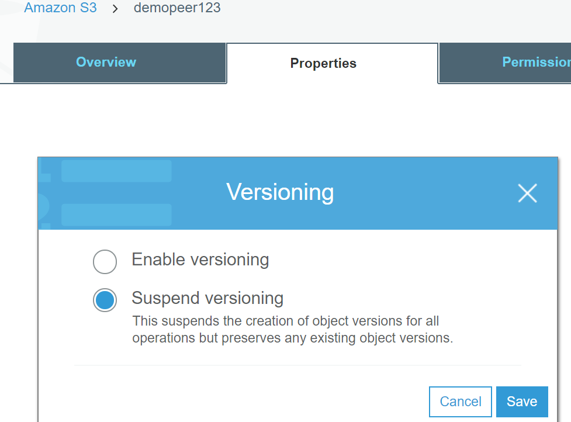
For more information on AWS S3 versioning, please visit the following URL:
https://docs.aws.amazon.com/AmazonS3/latest/dev/Versioning.html
Option A is incorrect as it does not offer protection against accidental deletion of files.
Option C is incorrect. It is not the ideal solution because multiple EC2 instances can access the file system.
Option D is ephemeral.
This lab walks you through to the steps how to Enables Versioning to a AWS S3 Bucket. Versioning enables you to keep multiple versions of an object in one bucket. In this lab we learn how to enable object versioning on a S3 bucket.
- Credit Needed10
- Time 0 : 30
An application needs to have a Datastore hosted in AWS. The following requirements are in place for the Datastore:
a) The initial storage capacity of 8 TB
b) The ability to accommodate a database growth of 8GB per day
c) The ability to have 4 Read Replicas
Which of the following Datastore is the best for this requirement?
Correct Answer – C
Aurora can have a storage limit of 64TB and can easily accommodate the initial 8TB plus a database growth of 8GB/day for nearly a period of 20+ years. It can have up to 15 Aurora Replicas that can be distributed across the Availability Zones that a DB cluster spans within an AWS Region.
Aurora Replicas work well for read scaling because they are fully dedicated to read operations on the cluster volume. Write operations are managed by the primary instance. Because the cluster volume is shared among all DB instances in your DB cluster, no additional work is required to replicate a copy of the data for each Aurora Replica.
For more information on AWS Aurora, please visit the following URL:
Note:
Our DB choice needs to fulfill the 3 criteria.
- Initial Storage capacity 8 TB
- Daily DB growth of 8GB/day
- Need 4 Read replicas
DynamoDB, alongside DynamoDB Accelerator (DAX), can support up to 9 read replicas in its primary cluster. However, we have to choose the best suitable one from the options listed in the question. We also have Aurora listed under the option which is fully dedicated for read operations in the cluster.
NOTE:
Yes, the first line of the question has not mentioned anything about the database, but the requirements have a mention of it, and also you were asked about read replicas. Also, in the real-time exam, Amazon asks these type of questions to check your understanding under stress, hence we do try replicating them for you to get prepared for the exam.
Dynamo DB also fulfills all 3 criteria mentioned above. But when we think about the "Read replicas", Aurora is fully dedicated for read operations in the cluster. For this question, we have to choose only one option. So Aurora is the best Option here. Please analyze the Explanation part of this question carefully.
This lab walks you through the creation and testing of an Amazon Aurora database. We will create an Aurora MySQL Database and and test the connection.
- Credit Needed10
- Time 1 : 0
There is a requirement to host a database on an EC2 Instance. It is also required that the EBS volume should support 18,000 IOPS.
Which Amazon EBS volume type would meet the performance requirements of this database?
Correct Answer – A
For high performance and high IOPS requirements, as in this case, the ideal choice would be to choose EBS Provisioned IOPS SSD.
The below snapshot from the AWS Documentation shows the usage of Provisioned IOPS for better IOPS performance in database-based applications.
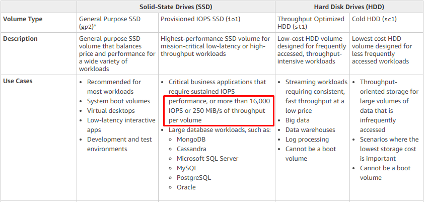
For more information on AWS EBS Volume types, please visit the following URL:
Development teams in your organization use S3 buckets to store log files for various applications hosted in AWS development environments. The developers intend to keep the logs for a month for troubleshooting purposes, and subsequently purge the logs.
Which feature should be used to enable this requirement?
Correct Answer – B
AWS Documentation mentions the following on Lifecycle policies:
Lifecycle configuration enables you to specify the Lifecycle management of objects in a bucket. The configuration is a set of one or more rules, where each rule defines an action for Amazon S3 to apply to a group of objects. These actions can be classified as follows:
- Transition actions – In which you define when objects transition to another storage class. For example, you may choose to transition objects to the STANDARD_IA (IA, for infrequent access) storage class 30 days after creation or archive objects to the GLACIER storage class one year after creation.
- Expiration actions – In which you specify when the objects expire. Then, Amazon S3 deletes the expired objects on your behalf.
For more information on AWS S3 Lifecycle policies, please visit the following URL:
https://docs.aws.amazon.com/AmazonS3/latest/dev/object-lifecycle-mgmt.html
This lab walks you through to Amazon Simple Storage Service. Amazon S3 has a simple web services interface that you can use to store and retrieve any amount of data, at any time, from anywhere on the web. In this lab we will demonstrate AWS S3 by creating a sample S3 bucket, uploading an object to S3 bucket and setting up bucket permission and policy.
- Credit Needed10
- Time 0 : 30
As an AWS solution architect, you are building a new image processing application with queuing service. There is fleet of m4.large EC2 instances which would poll SQS as images are uploaded by users. The image processing takes around 55 seconds for completion, and users are notified via emails on completion. During the trial period, you find duplicate messages being generated due to which users are getting multiple emails for the same image. What would be the best option to eliminate duplicate messages before going to production?
Correct Answer: B
Default visibility timeout is 30 seconds. Since the application needs 60 seconds to complete the processing, the visibility timeout should be increased to 60 seconds. This will hide the message from other consumers for 60 seconds, so they will not process the same file which is in the process by the original consumer.
- Options A & C are incorrect as Delay queues let you postpone the delivery of new messages to a queue for a number of seconds. Creating a delay queue for 60 seconds or more will delay the delivery of the new message by specific seconds & not eliminate the duplicate message.
- Option D is incorrect as visibility timeout should be set to the maximum time it takes to process & delete the message from the queue. If visibility timeout is set to below 60 seconds, the message will be again visible to other consumers while the original consumer is already working on it.
For more information on SQS visibility timeout, refer to the following URL:
Which AWS services can be used to host and scale an application, in which the NGINX load balancer used? (SELECT TWO)
Correct Answer – A, B
NGINX is open-source software for web serving, reverse proxying, caching, content-based routing rules, auto-scaling support, and traffic management policies.
NGINX can be hosted on an EC2 instance through a series of clear steps- Launch an EC2 instance through the console. Connect to the instance over SSH and use the command yum install -y Nginx to install Nginx. Also, make sure that it is configured to restart automatically after a reboot.
It can also be installed with an Elastic Beanstalk service. To enable the NGINX proxy server with your Tomcat application, you must add a configuration file to .ebextensions in the application source bundle that you upload to Elastic Beanstalk.
More information is available at:
The below snippet from the AWS Documentation shows the server available for Web server environments that can be created via Elastic Beanstalk. The server shows that NGINX servers can be provisioned via the Elastic Beanstalk service.
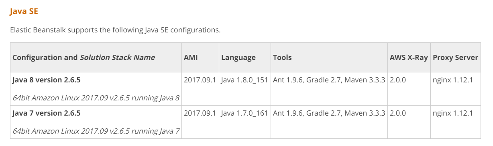
For more information on the supported platforms for AWS Elastic Beanstalk, please visit the following URL:
NGINX is available as AMI for EC2.
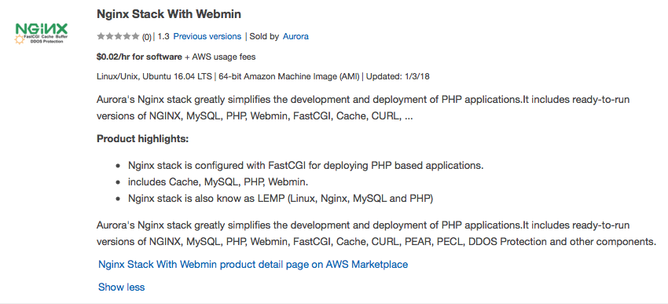
You are working as Cloud Architect in an E-commerce Company where the admin panel will upload numerous product images to S3 through a script on a daily basis and the Company needs optimized performance. Which option would you recommend in this case?
Option A is Correct as per new documentation changes in S3
Amazon S3 now provides increased performance to support at least 3,500 requests per second to add data which was initially 100 requests per second and 5,500 requests per second to retrieve data, which can save significant processing time for no additional charge. Each S3 prefix can support these request rates, making it simple to increase performance significantly
AWS previously recommended randomizing prefixes for improved performance, but that is no longer the case which means you can now use logical or sequential naming patterns in S3 object naming without any performance implications.
Option B is incorrect because now random prefixes are not required to increase the performance.
Options C and D are incorrect because suffix was never recommended to increase the performance.
There is a requirement to get the source IP addresses that access resources in a private subnet. Which of the following could be used to fulfill this purpose?
Correct Answer – B
The AWS Documentation mentions the following:
VPC Flow Logs is a feature that enables you to capture information about the IP traffic going to and from network interfaces in your VPC. Flow log data is stored using Amazon CloudWatch Logs. After you've created a flow log, you can view and retrieve its data in Amazon CloudWatch Logs.
For more information on VPC Flow Logs, please visit the following URL:
https://docs.aws.amazon.com/AmazonVPC/latest/UserGuide/flow-logs.html
Option A is incorrect as AWS Trusted Advisor is your customized cloud expert! It helps you to observe best practices for the use of AWS by inspecting your AWS environment with an eye toward saving money, improving system performance and reliability, and closing security gaps.
AWS CloudTrail is a service that enables governance, compliance, operational auditing, and risk auditing of your AWS account. With CloudTrail, you can log, continuously monitor, and retain account activity related to actions across your AWS infrastructure.
CloudWatch Metric is mainly used for performance metrics.
There is a requirement for 500 messages to be sent and processed in order. Which service can be used in this regard?
Correct Answer – A
One can use SQS FIFO queues for this purpose. The AWS Documentation mentions the following on SQS FIFO Queues:
Amazon SQS is a reliable and highly-scalable managed message queue service for storing messages in transit between application components. FIFO queues complement the existing Amazon SQS standard queues, which offer high throughput, best-effort ordering, and at-least-once delivery. FIFO queues have essentially the same features as standard queues, but provide the added benefits of supporting, ordering and exactly-once processing. FIFO queues provide additional features that help prevent unintentional duplicates from being sent by message producers or from being received by message consumers. Additionally, message groups allow multiple separate ordered message streams within the same queue.
For more information on SQS FIFO Queues, please visit the following URL:
https://aws.amazon.com/about-aws/whats-new/2016/11/amazon-sqs-introduces-fifo-queues-with-exactly-once-processing-and-lower-prices-for-standard-queues/
Note:
Yes, SNS is used to send out the messages.
SNS is a web service that coordinates and manages the delivery or sending of messages to subscribing endpoints or clients. In Amazon SNS, there are two types of clients—publishers and subscribers—also referred to as producers and consumers. Publishers communicate asynchronously with subscribers by producing and sending a message to a topic, which is a logical access point and communication channel. Subscribers (i.e., web servers, email addresses, Amazon SQS queues, AWS Lambda functions) consume or receive the message or notification over one of the supported protocols (i.e., Amazon SQS, HTTP/S, email, SMS, Lambda) when they are subscribed to the topic. There is no such thing like maintain the order of the messages in SNS.
In the question, it mentioned that "There is a requirement for 500 messages to be sent and processed in order". By SNS, all messages will be sent at the same time to all the subscribers.
Please visit the following link to get more information.
https://docs.aws.amazon.com/sns/latest/dg/welcome.html
A database is required for a Two-Tier application. The data would go through multiple schema changes. The database needs to be durable, ACID-compliant and changes to the database should not result in database downtime. What would be the best option for data storage?
The correct answer is D: AWS Aurora
As per the AWS documentation, Aurora does support Schema changes.
Aurora is a proprietary technology from AWS this means its not open source. Postgres and MySQL are both supported as Aurora DB (that means your drivers will work as if Aurora was a Postgress or MySQL database).
Aurora storage grows automatically in increments of 10GB up to 64 TB. It can have up to 15 replicas while MYSQL has 5 and the replication is very fast(sub 10 ms replica lag)
A PostgreSQL Read Replica reports a replication lag of up to five minutes if there are no user transactions occurring on the source DB instance
Amazon Aurora has taken a common data definition language (DDL) statement that typically requires hours to complete in MySQL and made it near-instantaneous.i.e.0.15 sec for a 100BG table on r3.8xlarge instance.
Note: Amazon DynamoDB is schema-less, in that the data items in a table need not have the same attributes or even the same number of attributes. Also, DynamoDB is not ACID compliant.
Hence it is not a solution.
In Aurora, when a user issues a DDL statement: The database updates the INFORMATION_SCHEMA system table with the new schema. In addition, the database timestamps the operation records the old schema into a new system table (Schema Version Table) and propagates this change to read replicas.
For more information, please check below AWS Docs:
https://aws.amazon.com/blogs/database/amazon-aurora-under-the-hood-fast-ddl/
https://aws.amazon.com/blogs/aws/new-amazon-dynamodb-transactions/
A Redshift cluster currently contains 60TB of data. There is a requirement that a disaster recovery site is put in place in a region located 600 km away. Which solution would help ensure that this requirement is fulfilled?
Correct Answer – B
The below diagram shows that snapshots are available for Redshift clusters enabling them to be available in different regions.
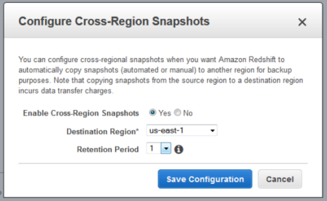
For more information on managing Redshift snapshots, please visit the following URLs:
- https://docs.aws.amazon.com/redshift/latest/mgmt/managing-snapshots-console.html
- https://aws.amazon.com/blogs/aws/automated-cross-region-snapshot-copy-for-amazon-redshift/
A company is using a Redshift cluster to store their data warehouse. There is a requirement from the Internal IT Security team to encrypt data in the Redshift database. How could this be achieved? (SELECT TWO)
Correct Answer - B and D
AWS documentation mentions the following:
Amazon Redshift uses a hierarchy of encryption keys to encrypt the database. You can use either AWS Key Management Service (AWS KMS) or a hardware security module (HSM) to manage the top-level encryption keys in this hierarchy. The process that Amazon Redshift uses for encryption differs depending on how you manage keys.
- For more information on Redshift encryption, please visit the following URL:
https://docs.aws.amazon.com/redshift/latest/mgmt/working-with-db-encryption.html
- Option D is correct. AWS now supports an end to end encryption of Redshift data using the server-side encryption features of Amazon S3 coupled with AWS KMS.
https://aws.amazon.com/blogs/big-data/encrypt-your-amazon-redshift-loads-with-amazon-s3-and-aws-kms/
An EC2 instance in private subnet needs access to S3 bucket placed in the same region as that of the EC2 instance. The EC2 instance needs to upload and download bigger files to S3 bucket frequently.
As an AWS solutions architect what quick and cost-effective solution would you suggest to your customers. You need to consider the fact that the EC2 instances are present in the private subnet, and the customers do not want their data to be exposed over the internet.
Correct Answer: C
- Option A is incorrect because the S3 service is region-specific, not AZ’s specific, and the statement talks about placing the S3 bucket in Public Subnet.
- Option B is incorrect. This is indeed a quick solution but would be expensive as the EC2 instances from private or public subnet will communicate with the S3 services over its endpoint. And when the endpoint is used it uses the internet for download and upload, hence exposing the data over the internet. Besides, the number of requests will have a cost associated with it.
- Option C is correct to be able to access the S3 services placed in the same region as that of the VPC having EC2 instance present in the Private subnet. You can create a VPC endpoint and update the route entry of the route table associated with the private subnet. This is a quick solution as well as cost-effective as it will use Amazon's own private network. Hence, it won’t expose the data over the internet.
- Option D is incorrect as this is certainly not a default setup unless we create a NAT Gateway or Instance. Even if they are there, it’s an expensive solution and exposes the data over the internet.
References:
An application requires an EC2 Instance for continuous batch processing activities requiring a maximum data throughput of 500 MiB/s. What would the best storage option for this?
Correct Answer – C
For storage volume types for batch processing activities with large throughput, consider using EBS Throughput Optimized Volume type. AWS Documentation also mentions this:
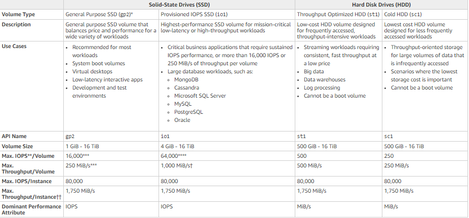
For more information on EBS Volume types, please visit the following URL:
https://docs.aws.amazon.com/AWSEC2/latest/UserGuide/EBSVolumeTypes.html
An application needs to access data in another AWS account in another VPC in the same region. What would ensure that the data can be accessed as required?
Correct Answer – D
- Options A and C are incorrect because these are used when private resources are required to access the Internet.
- Option B is incorrect because it's used to create a connection between the On-premises and AWS resources.
AWS Documentation mentions the following about VPC Peering:
A VPC peering connection is a networking connection between two VPCs that enables you to route traffic between them privately. Instances in either VPC can communicate with each other as if they are within the same network. You can create a VPC Peering connection between your own VPCs, with a VPC in another AWS account, or with a VPC in a different AWS Region.
For more information on VPC Peering, please visit the following URL:
An application currently using a NAT Instance is required to use a NAT Gateway. Which of the following can be used to accomplish this?
Correct Answer – C
One can simply start and stop using the NAT Gateway service using the deployed NAT instances. But you need to ensure that the NAT Gateway is deployed in the public subnet.
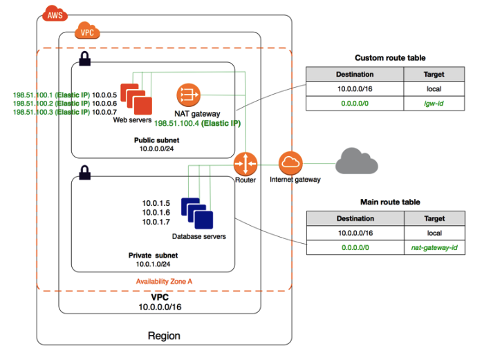
For more information on migrating to a NAT Gateway, please visit the following URL:
An application consists of the following architecture:
a. EC2 Instances in multiple AZ’s behind an ELB
b. EC2 Instances are launched via an Auto Scaling Group.
c. There is a NAT instance which is used so that instances can download updates from the Internet.
What is a bottleneck in the architecture?
Correct Answer – C
Since there is only one NAT instance, this is a bottleneck in the architecture. For high availability, launch NAT instances in multiple Available Zones and make it as part of an Auto Scaling Group.
For more information on NAT Instances, please visit the following URL:
https://docs.aws.amazon.com/AmazonVPC/latest/UserGuide/VPC_NAT_Instance.html
A company owns an API which sees a high influx of requests per second. The company wants to host this API with the least administrative maintenance. How can this be achieved?
Correct Answer – B
Since the company has full ownership of the API, the best solution would be to convert the code for the API and use it in a Lambda function. This can help save on cost since, in the case of Lambda, you only pay for the time the function runs, and not for the infrastructure.
Then, you can use the API Gateway along with the AWS Lambda function to scale accordingly.
For more information on using API Gateway with AWS Lambda, please visit the following URL:
https://docs.aws.amazon.com/apigateway/latest/developerguide/getting-started-with-lambda-integration.html
Note: With Lambda you do not have to provision your own instances; Lambda performs all the administrative activities on your behalf, including capacity provisioning, monitoring fleet health, applying security patches to the underlying compute resources, deploying your code, running a web service front end, and monitoring and logging your code. AWS Lambda provides easy scaling and high availability to your code without additional effort on your part.
There is a requirement to host a database application having resource-intensive reads and writes (lots of reads and writes). Which of the below options would be the most suitable to meet this requirement?
Correct Answer – A
Since there is a requirement for high performance with high IOPS, one needs to opt for EBS Provisioned IOPS SSD.
The below snapshot from the AWS Documentation mentions the need for using Provisioned IOPS for better IOPS performance in database-based applications.
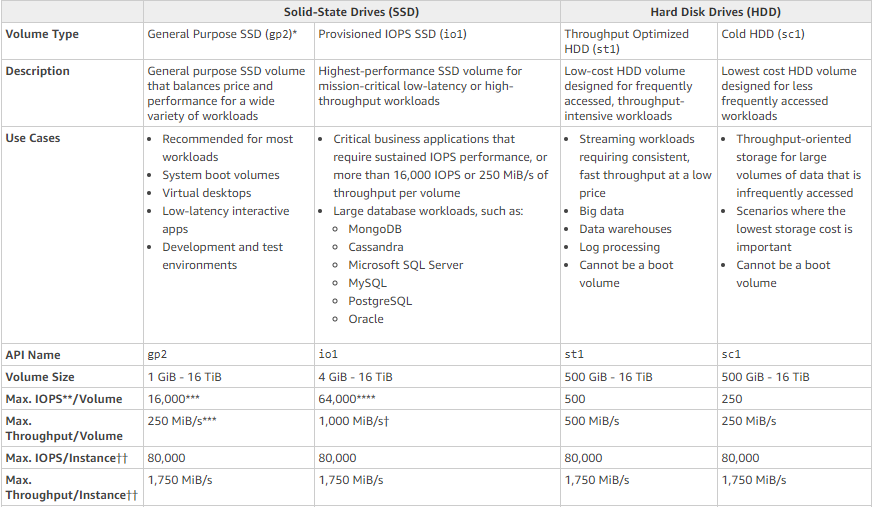
For more information on AWS EBS Volume types, please visit the following URL:
An application sends images to S3. The metadata for these images needs to be saved in persistent storage and is required to be indexed. Which one of the following could be used for the underlying metadata storage?
Correct Answer – C
The most efficient storage mechanism for just storing metadata is DynamoDB. DynamoDB is normally used in conjunction with the Simple Storage service. So, after storing the images in S3, you can store their metadata in DynamoDB. You can also create secondary indexes for DynamoDB Tables.
For more information on managing indexes in DynamoDB, please visit the following URL:
https://docs.aws.amazon.com/amazondynamodb/latest/developerguide/SQLtoNoSQL.Indexes.html
This lab walks you through to Amazon DynamoDB features. In this lab, we will create a table in Amazon DynamoDB to store information and then query that information from the DynamoDB table.
- Credit Needed10
- Time 0 : 30
An application hosted on EC2 Instances has its promotional campaign due, to start in 2 weeks. There is a mandate from the management to ensure that no performance problems are encountered due to traffic growth during this time. What should be done to the Auto Scaling Group to fulfill this requirement?
Correct Answer – B
If you are scaling based on a metric, which is a utilization metric that increases or decreases proportionally to the number of instances in the Auto Scaling group, we recommend that you use a target tracking scaling policy instead.
In Target tracking scaling policies, you select a predefined metric or configure a customized metric, and set a target value. EC2 Auto Scaling creates and manages the CloudWatch alarms that trigger the scaling policy and calculates the scaling adjustment based on the metric and the target value. The scaling policy adds or removes capacity as required to keep the metric at, or close to, the specified target value.
Scheduled scaling works better when you can predict the load changes and also when you know how long you need to run. Here in our scenario we just know that there will be heavy traffic during the campaign period (the period is not specified) but not sure about the actual traffic. We don't have any history to predict it either.
For more information on Auto Scaling Scheduled Scaling, please visit the following URLs:
AWS Auto Scaling will automatically scale resources as needed to align to your selected scaling strategy, This lab walks you through to use Auto Scaling to automatically launch or terminate EC2’s instances based on user defined policies, schedules and health checks.
- Credit Needed10
- Time 0 : 55
Currently, a company makes use of EBS snapshots to back up their EBS Volumes. As a part of the business continuity requirement, these snapshots need to be made available in another region. How could this be achieved?
Correct Answer - B
AWS Documentation mentions the following:
A snapshot is constrained to the region where it was created. After you create a snapshot of an EBS volume, you can use it to create new volumes in the same region. For more information, follow the link on Restoring an Amazon EBS Volume from a Snapshot below. You can also copy snapshots across regions, making it possible to use multiple regions for geographical expansion, data center migration, and disaster recovery.
For more information on EBS Snapshots, please visit the following URL:
https://docs.aws.amazon.com/AWSEC2/latest/UserGuide/EBSSnapshots.html
For more information on Restoring an Amazon EBS Volume from a Snapshot, please visit the following URL:
https://docs.aws.amazon.com/AWSEC2/latest/UserGuide/ebs-restoring-volume.html
Option C is incorrect because the EBS snapshots are stored in S3, which is managed by AWS. We don't have the option to see the snapshots in S3.
This lab walks you through creation of a snapshot of EC2 instance and launch a new EC2 instance using AMI of that snapshot.
- Credit Needed10
- Time 0 : 30
A company has an application hosted in AWS. This application consists of EC2 Instances which sit behind an ELB. The following are the requirements from an administrative perspective:
a) Ensure notifications are sent when the read requests go beyond 1000 requests per minute
b) Ensure notifications are sent when the latency goes beyond 10 seconds
c) Monitor all API activities on the AWS resources
Which of the followings can be used to satisfy these requirements? (SELECT TWO)
Correct Answer – A and C
AWS CloudTrail can be used to monitor the API calls.
For more information on CloudTrail, please visit the following URL:
When you use CloudWatch metrics for an ELB, you can get the number of read requests and latency out of the box.
For more information on using Cloudwatch with the ELB, please visit the following URL:
- Option A is correct. CloudTrail is a web service that records API calls for all the resources in your AWS account and delivers log files to an Amazon S3 bucket. The recorded information includes the identity of the user, the start time of the AWS API call, the source IP address, the request parameters, and the response elements returned by the service.
https://docs.aws.amazon.com/awscloudtrail/latest/APIReference/Welcome.html
- Option C is correct. Use Cloudwatch metrics for the metrics that need to be monitored as per the requirement and set up an alarm activity to send out notifications when the metric reaches the set threshold limit.
A company has resources hosted in their AWS Account. There is a requirement to monitor API activity for all regions and the audit needs to be applied for future regions as well. What would fulfill this requirement?
Correct Answer – B
AWS Documentation mentions the following:
You can now turn on a trail across all regions for your AWS account. CloudTrail will deliver log files from all regions to the Amazon S3 bucket and an optional CloudWatch Logs log group you specified. Additionally, when AWS launches a new region, CloudTrail will create the same trail in the new region. As a result, you will receive log files containing API activity for the new region without taking any action.
For more information on this feature, please visit the following URL:
There is a requirement for an iSCSI device and the legacy application needs local storage with low-latency access to all the data. What would you do to meet the demands of the application?
Correct Answer – C
AWS Documentation mentions the following:
If you need low-latency access to your entire dataset, first configure your on-premises gateway to store all your data locally. Then, asynchronously back up point-in-time snapshots of this data to Amazon S3. This configuration provides durable and inexpensive offsite backups that you can recover to your local data center or Amazon EC2. For example, if you need replacement capacity for disaster recovery, you can recover the backups to Amazon EC2.
For more information on the Storage gateway, please visit the following URL:
https://docs.aws.amazon.com/storagegateway/latest/userguide/WhatIsStorageGateway.html
S3 and Glacier are not used for this purpose.
Volume gateway provides an iSCSI target, which enables you to create volumes and mount them as iSCSI devices from your on-premises or EC2 application servers. The volume gateway runs in either a cached or stored mode.
- In the cached mode, your primary data is written to S3, while retaining your frequently accessed data locally in a cache for low-latency access.
- In the stored mode, your primary data is stored locally and your entire dataset is available for low-latency access while asynchronously backed up to AWS.
There is a requirement for EC2 Instances in a private subnet to access an S3 bucket. It is required that the traffic does not traverse to the Internet. Which of the following can be used to fulfill this requirement?
Correct Answer - A
A VPC endpoint enables you to privately connect your VPC to supported AWS services and VPC endpoint services powered by PrivateLink without requiring an internet gateway, NAT device, VPN connection or AWS Direct Connect connection. Instances in your VPC do not require public IP addresses to communicate with resources in the service. Traffic between your VPC and the other service does not leave the Amazon network.
For more information on AWS VPC endpoints, please visit the following URL:
https://docs.aws.amazon.com/AmazonVPC/latest/UserGuide/vpc-endpoints.html
There is an application that consists of EC2 Instances behind classic ELBs. An EC2 proxy is used for content management of the backend instances. The application might not be able to scale properly.
What should be used to scale the proxy and backend instances appropriately? (SELECT TWO)
Correct Answer – A and B
When you see a requirement for scaling, consider the Auto Scaling service provided by AWS. This can be used to scale both the backend instances and the EC2 proxy server.
For more information on Auto Scaling, please visit the following URL:
There is a website hosted in AWS that might get a lot of traffic over the next couple of weeks. If the application experiences a natural disaster at this time, what should be used to reduce potential disruption to users?
Correct Answer – D
In a disaster recovery scenario, the best choice out of all given options is to divert the traffic to a static website.
- Option A is wrong because ELB can only balance traffic in one region, not across multiple regions.
- Options B and C are incorrect because using backups across AZs is not enough for disaster recovery purposes.
For more information on disaster recovery in AWS, please visit the following URLs:
- https://aws.amazon.com/premiumsupport/knowledge-center/fail-over-s3-r53/
- https://aws.amazon.com/disaster-recovery/
- The wording "to reduce the potential disruption in case of issues" is pointing to a disaster recovery situation. There is more than one way to manage this situation. However, we need to choose the best option from the list given here. Out of this, the most suitable one is Option D.
Most organizations try to implement High Availability (HA) instead of DR to guard them against any downtime of services. In the case of HA, we ensure there exists a fallback mechanism for our services. The service that runs in HA is handled by hosts running in different availability zones but in the same geographical region. This approach, however, does not guarantee that our business will be up and running in case the entire region goes down.
DR takes things to a completely new level, wherein you need to be able to recover from a different region that is separated by over 250 miles. Our DR implementation is an Active/Passive model, meaning that we always have minimum critical services running in different regions, but a major part of the infrastructure is launched and restored when required.
For more information on large scale disaster recovery using AWS regions, please visit the following URL:
Note:
Usually, when we discuss a disaster recovery scenario we assume that the entire region is affected due to some disaster. So we need the service to be provided from yet another region. So in that case setting up a solution in another AZ will not work as it is in the same region. Option A is incorrect though it mentions yet another region because ELBs cannot span across regions.
So out of the options provided, Option D is the most suitable solution.
You have a requirement to host a static website for a domain named mycompany.com in AWS.
How would you achieve this? (SELECT TWO)
Correct Answer – B and C
You can host a static website in S3. You need to ensure that the nameserver records for the Route53 hosted zone, are entered in your domain registrar.
For more information on website hosting in S3, please visit the following URLs:
This lab walks you through how to create a static HTML webstie using aws S3 and make it global to the internet.
- Credit Needed10
- Time 0 : 30
A database, hosted using the AWS RDS service, is getting a lot of database queries and has now become a bottleneck for the associating application. Which action would ensure that the database is not a performance bottleneck?
Correct Answer – C
ElastiCache is an in-memory solution which can be used in front of a database to cache the common queries issued against the database. This can reduce the overall load on the database.
- Option A is incorrect because this is normally used for content distribution.
- Option B is partially correct, but you need to have one more database as an internal load balancing solution.
- Option D is incorrect because SNS is a simple notification service.
For more information on ElastiCache, please visit the following URL:
https://aws.amazon.com/elasticache/
A database is being hosted using the AWS RDS service. This database is to be made into a production database and is required to have high availability. Which of the following could be used to achieve this requirement?
Correct Answer - C
Option A is incorrect because the Multi-AZ feature allows high availability across Availability Zones, not regions.
Options B and D are incorrect because Read Replicas can be used to offload database reads. But if you want high availability then opt for the Multi-AZ feature.
AWS Documentation mentions the following:
Amazon RDS Multi-AZ deployments provide enhanced availability and durability for Database (DB) Instances, making them a natural fit for production database workloads. When you provision a Multi-AZ DB Instance, Amazon RDS automatically creates a primary DB Instance and synchronously replicates the data to a standby instance in a different Availability Zone (AZ).
For more information on AWS RDS Multi-AZ, please visit the following URL:
https://aws.amazon.com/rds/details/multi-az/
A company wants to host a web application and a database layer in AWS. This will be done with the use of subnets in a VPC.
What would be a proper architectural design for supporting the required tiers of the application?
Correct Answer – B
The ideal setup is to ensure that the web server is hosted in the public subnet so that it can be accessed by users on the internet. The database server can be hosted in the private subnet.
The below diagram shows how this can be set up:
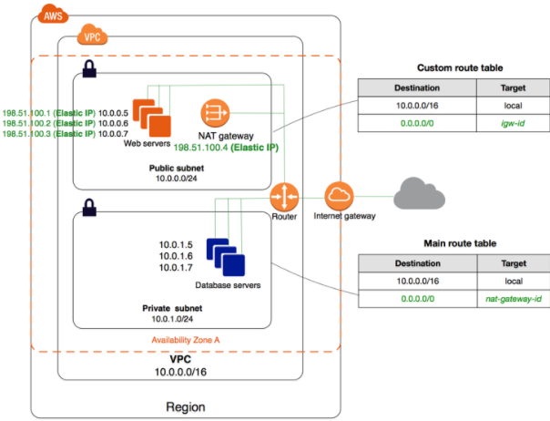
For more information on public and private subnets in AWS, please visit the following URL:
https://docs.aws.amazon.com/AmazonVPC/latest/UserGuide/VPC_Scenario2.html
-
Learn how to build Public and Private subnets from scratch.
-
VPC wizard will not be used. So every component required to build public and private subnets will be created and configured manually.
-
This will give an in-depth understanding of internal components of VPC and subnets.
- Credit Needed10
- Time 0 : 30
You require the ability to analyze a customer’s clickstream data on a website so they can do behavioral analysis. Your customer needs to know what sequence of pages and ads their customer clicked on. This data will be used in real-time to modify the page layouts as customers click through the site to increase stickiness and advertising click-through. Which option would meet the requirements for capturing and analyzing this data?
Correct Answer – B
The AWS Documentation mentions the following:
Amazon Kinesis Data Streams enable you to build custom applications that process or analyze streaming data for specialized needs. Kinesis Data Streams can continuously capture and store terabytes of data per hour from thousands of sources such as website clickstreams, financial transactions, social media feeds, IT logs, and location-tracking events.
For more information on Amazon Kinesis, please visit the following URL:
A company has an infrastructure that consists of machines which send log information every 5 minutes. The number of these machines can run into thousands and it is required to ensure that the analysis of every log item is completed within 24 hours. What could be helpful in fulfilling this requirement?
Correct Answer – A
AWS Documentation mentions the following:
Amazon Kinesis Data Streams (KDS) is a massively scalable and durable real-time data streaming service. KDS can continuously capture gigabytes of data per second from thousands of sources such as website clickstreams, database event streams, financial transactions, social media feeds, IT logs, and location-tracking events.
Make your streaming data available to multiple real-time analytics applications, to Amazon S3 or to AWS Lambda within 70 milliseconds of the data being collected.
For more information on Amazon Kinesis firehose, please visit the following URL:
An application hosted in AWS allows users to upload videos to an S3 bucket. A user is required to be given access to upload some videos for a week based on the profile. How could this be accomplished in the best way possible?
Correct Answer – B
Pre-signed URLs are the perfect solution when you want to give temporary access to users for S3 buckets. So, whenever a new profile is created, you can create a pre-signed URL to ensure that the URL lasts for a week and allows users to upload the required objects.
For more information on pre-signed URLs, please visit the following URL:
https://docs.aws.amazon.com/AmazonS3/latest/dev/PresignedUrlUploadObject.html
A company is planning to use Docker containers and necessary container orchestration tools for its batch processing requirements. There is a requirement of batch processing for both critical and non-critical data. Which of the following is the best implementation step for this requirement to ensure that cost is effectively managed?
Correct Answer – D
The Elastic Container service from AWS can be used for container orchestration. Since there are both critical and non-critical loads, one can use Spot instances for the non-critical workloads for ensuring that the cost is kept at a minimum.
For more information on AWS ECS, please visit the following URL:
A company has a requirement for archival of 6TB of data. There is an agreement with the stakeholders for an 8-hour agreed retrieval time. Which would be the MOST cost-effective storage option in this scenario?
Correct Answer - C
Amazon Glacier is the perfect solution for this. Since the agreed time frame for retrieval is met at 8 hours, this will be the most cost-effective option.
For more information on AWS Glacier, please visit the following URL:
A company hosts 5 web servers in AWS. They want to ensure that Route53 can be used to route user traffic to random healthy web servers when they request for the underlying web application. Which routing policy should be used to fulfill this requirement?
Correct Answer - C
The AWS Documentation mentions the following to support this:
If you want to route traffic randomly to multiple resources such as web servers, you can create one multivalue answer record for each resource and, optionally, associate an Amazon Route 53 health check with each record.
For example, suppose you manage an HTTP web service with a dozen web servers where each has its own IP address. No web server could handle all the traffic, but if you create a dozen multivalue answer records, Amazon Route 53 responds to DNS queries with up to eight healthy records in response to each DNS query. Amazon Route53 gives different answers to different DNS resolvers. If a web server becomes unavailable after a resolver caches a response, client software can try another IP address in the response.
For more information, please visit the following URL:
- Simple routing policy – Use for a single resource that performs a given function for your domain, for example, a web server that serves content for the example.com website.
- Latency routing policy – Use when you have resources in multiple locations and you want to route traffic to the resource that provides the best latency.
- Weighted routing policy – Use to route traffic to multiple resources in proportions that you specify.
- Multivalue answer routing policy – Use when you want Route53 to respond to DNS queries with up to eight healthy records selected at random.
For more information on different routing policies, please visit the following URL
https://aws.amazon.com/premiumsupport/knowledge-center/multivalue-versus-simple-policies
You are working as AWS Solutions Architect for a large banking organization. The requirement is that under normal business hours, there would always be 24 web servers up and running in a region (example: US - West (Oregon)). It will be a three-tier architecture connecting to the databases. The solution offered should be highly available, secure, cost-effective, and should be able to respond to the heavy requests during peak hours and tolerate up to one AZ failure.
What would be the best solution to meet this requirement?
Correct Answer: B
- Option A is incorrect. Everything looks good, but the designed architecture does not look to be cost-effective as all the time 48 servers will be running and it does not have ASG to cater to additional load on servers. However, it is fault-tolerant to one AZ failure.
Besides, it is always a good practice to use multiple AZs to make the application highly available.
- Option B is correct, as the solution needs to be tolerant up to one AZ failure. It means there are always 36 web servers to cater the service requests. If one AZ fails then there will be 24 servers running all the time, and in case two AZ fails there will be 12 servers running. Also, ASG can be utilized to scale out the required number of servers.
- Option C is incorrect as it will not be a suitable solution. If there will be one AZ failure the other AZ will have only 12 web servers running. One might think ASG is always there to take care when the second AZ fails. But think of a scenario when other AZ fails and at the same time traffic is at its peak, then the application will not be further scalable and users might face slow responses.
- Option D is incorrect. Remember the design principle of keeping the databases in private subnet. As this solution mentions to place databases in another public subnet, the data can be exposed over the internet and hence it’s an insecure application.
This lab walks you through AWS Elastic Load Balancing. Elastic Load Balancing automatically distributes incoming application traffic across multiple Amazon EC2 instances in the cloud. In this lab, we will demonstrate elastic load balancing with 2 EC2 Instances.
- Credit Needed10
- Time 0 : 30